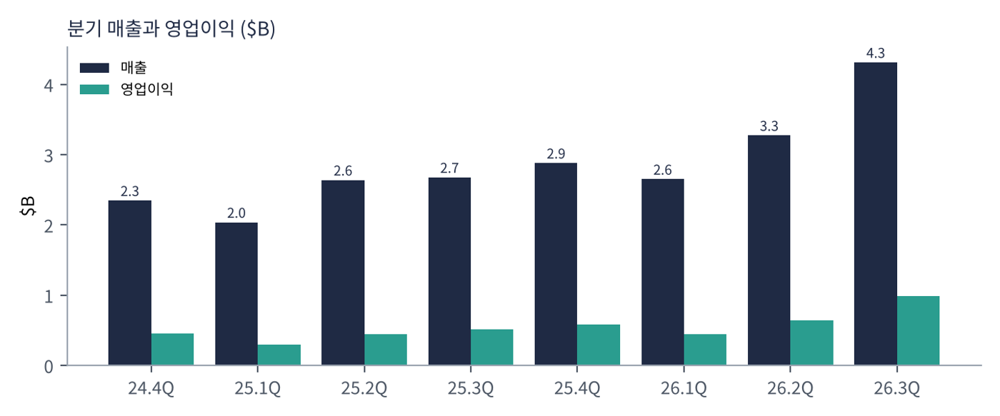
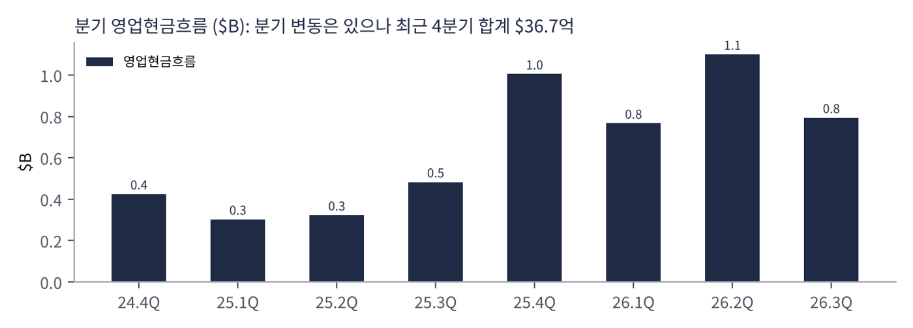
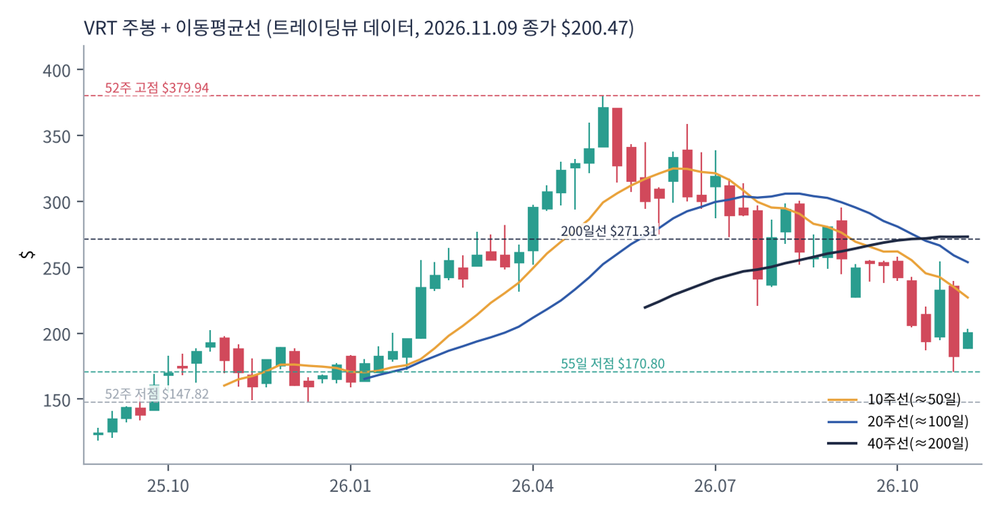
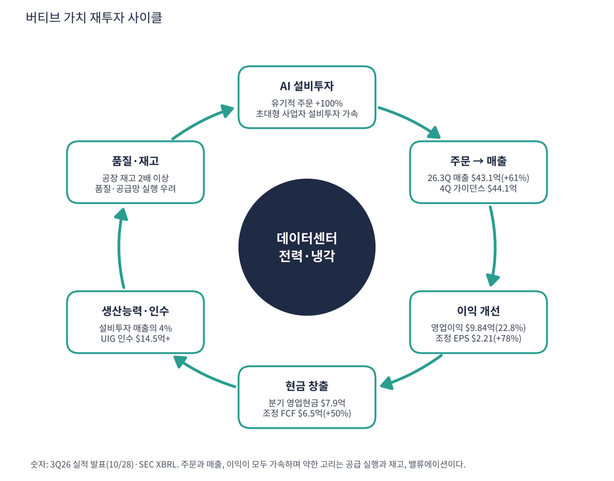

버티브는 AI·클라우드 데이터센터가 쓰는 전력 공급 장치와 냉각 장비를 만드는 인프라 회사다. GPU 서버가 더 많은 전기를 먹고 더 뜨거워지면서 전원 변환·무정전 전원장치(UPS)·액체 냉각 수요가 폭증했다. 회사는 장비를 공장에서 미리 조립한 랙·모듈형 솔루션으로 설치 기간을 줄이는 방식으로 데이터센터를 지원한다. 3분기 유기적 주문이 +100% 이상이었다.
| 항목 | 내용 |
|---|---|
| 종목 | Vertiv Holdings Co (VRT) · NYSE · 데이터센터 전력·냉각 · 본사 오하이오주 콜럼버스 |
| 시가총액 | 약 $772억 · TTM PER 37.5배 · P/S 5.5배 · 11/9 종가 $200.47(+9.6%) |
| 최근 분기(2026.3Q) | 매출 $43.13억(+61%, 유기적 +55%), 영업이익 $9.84억(22.8%), 순이익 $7.65억, 영업현금 $7.94억, 유기적 주문 +100% 이상 |
| 4Q 가이던스 | 매출 $44.13억(유기적 +50%), 조정 EPS $2.25 |
| FY26 가이던스 | 매출 $144.5~148.5억(+$6.5억 상향), 조정 EPS $7.10~7.20, 조정 영업이익 $34.8~35.6억, 설비투자 매출의 약 4% |
| 인수 | UtilityInnovation Group(UIG) 약 $14.5억 현금 + 최대 $11.5억 조건부 |
| 다음 실적 | 4Q26 실적: 2027년 2월 예정(확인 필요) |
| 직책 | 인물 | 역할·특징 |
|---|---|---|
| CEO | 지오르다노 알베르타치 | 제품 개발 주기를 '몇 년에서 몇 달'로 줄이고 생산능력을 확대하는 데 집중. "가장 큰 인프라 구축이 가속 중" |
| CFO | 데이비드 팰론 | 조정 FCF·가이던스 상향·인수 자금을 설명하는 재무 책임자 |
경영 스타일: '수요가 보이면 공장부터 늘린다'. 가이던스를 한 분기에 $6.5억 올리고 생산능력 투자를 매출의 4% 수준으로 유지한다. 한편 전력·소프트웨어 영역 인수(UIG)로 제품 폭을 넓힌다. 회사는 분기 주문·수주잔고 수치를 2025년 말부터 공개하지 않고 증가율만 밝혀 시장이 가시성을 의심하기도 한다.
GPU 서버가 필요로 하는 고전력 변환, 액체 냉각, 컨테이너·랙 단위 사전 조립을 공급한다. 설치 속도가 고객이 중시하는 가치다.
서버 랙 단위 통합과 서비스·부품까지 팔아 장비 교체 사이클과 관계없이 반복 수익을 늘리려 한다.
| 분기 | 매출 | 영업이익 | 영업이익률 | 순이익 | EPS | 영업현금 | 영업이익률 | 특이 사항 |
|---|---|---|---|---|---|---|---|---|
| 24.4Q | $23.5억 | $4.6억 | 19.5% | $1.5억 | 0.38* | $4.2억 | 19.5% | |
| 25.1Q | $20.4억 | $2.9억 | 14.3% | $1.6억 | 0.42 | $3.0억 | 14.3% | |
| 25.2Q | $26.4억 | $4.4억 | 16.8% | $3.2억 | 0.83 | $3.2억 | 16.8% | |
| 25.3Q | $26.8억 | $5.2억 | 19.3% | $4.0억 | 1.02 | $4.8억 | 19.3% | |
| 25.4Q | $28.8억 | $5.8억 | 20.1% | $4.5억 | 1.14* | $10.1억 | 20.1% | |
| 26.1Q | $26.5억 | $4.4억 | 16.6% | $3.9억 | 0.99 | $7.7억 | 16.6% | |
| 26.2Q | $32.7억 | $6.4억 | 19.5% | $5.0억 | 1.27 | $11.0억 | 19.5% | |
| 26.3Q | $43.1억 | $9.8억 | 22.8% | $7.7억 | 1.95 | $7.9억 | 22.8% | 유기적 주문 +100%, 인수 UIG 완료 |
EPS는 희석 주당순이익(GAAP, SEC 제출 자료 기준)이다. *는 4분기를 '연간 EPS − 1~3분기 합'으로 계산한 근사치라 실제 발표값과 다를 수 있다.


흐름 요약: 매출이 25.1Q $20.4억에서 26.3Q $43.1억으로 2.1배가 됐고 3분기 증가율은 +61%(유기적 +55%)다. 영업이익은 $2.9억에서 $9.8억으로 3.4배, 영업이익률은 14.3%에서 22.8%로 올랐다. 순이익도 $1.65억에서 $7.65억으로 4.6배가 됐다. 영업현금은 분기 변동이 있지만 최근 4분기 합계 $36.7억이고 TTM FCF는 $31.2억(트레이딩뷰)이다. 3분기 공장 재고가 2배 이상 늘었다는 해석이 있어 4분기 현금 전환을 확인해야 한다.
| 지역 | 26.3Q 매출 | 비중 | 특징 |
|---|---|---|---|
| 아메리카 | $29.89억 | 69.3% | 미국 초대형 사업자·AI 데이터센터 중심 |
| 아시아태평양 | $7.79억 | 18.1% | — |
| 유럽·중동·아프리카 | $5.45억 | 12.6% | 유기적 성장 19%로 회복(제3자 해석) |
제품군(전력·열 관리·서비스) 매출 금액은 이번 수집에서 확인하지 못했다. 매출 성장 +61% 중 인수 효과는 약 6%p다. 아메리카가 7할이므로 미국 하이퍼스케일러 설비투자 변화가 가장 큰 변수다.
버티브가 가려는 곳은 AI 데이터센터의 전력·냉각을 통째로 해결하는 인프라 파트너다. 서버(엔비디아)와 건물(건설사) 사이에서 '전원과 열'을 공급하는 필수 부품이 되는 것이다.
| 축 | 내용 |
|---|---|
| 생산능력 확대 | 설비투자 매출의 약 4%, 공장 재고 확대 |
| 제품 통합 | 랙·모듈형 솔루션으로 설치 시간 단축 |
| 인수 | UIG 인수($14.5억+)로 전력 영역 확대 |
| 서비스 | 설치 후 유지보수·부품 판매로 반복 수익 |

| 이동평균 | 값 | 종가 대비 | 해석 |
|---|---|---|---|
| 5일선 | $200.32 | +0.1% | |
| 20일선 | $212.43 | -5.6% | |
| 50일선 | $235.86 | -15.0% | |
| 100일선 | $262.59 | -23.7% | |
| 200일선 | $271.31 | -26.1% | $271, 현재가 +35% 위 |
11/9 종가 $200.47는 52주 고점 $379.94의 53% 수준, 52주 저점 $147.82 대비 +36%다. 1·3·6·12개월 수익률은 -17%·-29%·-46%·+10%. 연중 고점 $379.9에서 -47% 내려왔다. 10/28 실적 발표일에 +14% 올랐지만 한 달 전 $242.8보다는 -17% 낮고, 11/9에 하루 +9.6% 반등했다.
트레이딩뷰 차트에서 사용자가 직접 그린 작도는 포함하지 않았고, 이동평균·돈키언 등 지표는 일봉 데이터로 직접 계산했다.
| 규칙 | 기준 | 현재 값 | 신호 |
|---|---|---|---|
| 장기 추세 필터 | 종가 vs 200일선 | $200.47 < $271.31 | 매도 |
| 중장기 교차 | 50일선 vs 200일선 | $235.86 < $271.31 | 매도 |
| 단기 교차 | 20일선 vs 50일선 | $212.43 < $235.86 | 매도 |
| 돈키언 채널 | 55일 고가 $295.34 / 저가 $170.80 | 중간값 $233.07 아래 | 매도 |
| 1개월 모멘텀 | 21거래일 수익률 | -17.4% (기준 $242.78) | 매도 |
| 3개월 모멘텀 | 63거래일 수익률 | -28.9% (기준 $281.81) | 매도 |
| 6개월 모멘텀 | 126거래일 수익률 | -45.5% (기준 $367.92) | 매도 |
| 12개월 모멘텀 | 252거래일 수익률 | +9.5% (기준 $183.02) | 매수 |
| 종합 (8개 평균) | -0.75 | 강한 매도 |
해석: 점수 -0.75(강한 매도)로 12개월 모멘텀만 매수다. 5일선($200.3)은 가격과 같고 20일($212.4)·50일($235.9)·100일($262.6)·200일($271.3)선 아래다. 14일 ATR $17.22 (8.6%).
| 가격 | 무엇이 바뀌나 | 의미 |
|---|---|---|
| $271.31 | 200일선 회복 시 장기 신호 매수 전환 | 점수 ±0.25 |
| $233.07 | 돈키언 중간값(55일 고·저점 평균) | 채널 신호 전환선 |
| $212.43 | 20일선 회복 시 단기 흐름 개선 | 단기 추세 신호 |
| $170.80 | 55일 저점 이탈 시 하락 추세 확정 | 손절 판단 기준 |
| 구분 | 가격 | 근거 |
|---|---|---|
| 저항 2 | $233.07 | 돈키언 중간값 |
| 저항 1 | $212.43 | 20일선 |
| 지지 1 | $200.32 | 5일선 |
| 지지 2 | $170.80 | 55일 저점 |
PEG 0.34(연환산 0.56~0.74)로 가치는 합리적이지만 CTA는 -0.75다. ATR $17(8.6%)로 변동성이 커서 $175~200 구간에서 계획 금액의 30%씩 세 번(총 90%)으로 나눠 매수하고 55일 저점 $170.8을 지킨다(평균 약 $187.5, 손절 $165 기준 손익비 1:2.0~1:3.7). 1차 $233(50일선·돈키언 중간값), 2차 $271(200일선)에서 익절한다. 55일 저점 $170.8 이탈 후 종가 $165 이하면 손절한다. 확인 신호는 4Q 매출 $44억 달성, 2027년 가이던스, 분기 주문 증가율 공개 여부다. 가격대는 내 시나리오이며 매매 권유가 아니다.
| 악재 요인 | 내용 | 강도 |
|---|---|---|
| 공급 실행·품질 | 주문 +100%에 맞춘 납기·품질 관리 우려(콜에서 질의). 재고 2배 이상 | 중간 |
| AI 설비투자 정점 우려 | 초대형 사업자 설비투자가 둔화되면 주문이 감소. 주가 -47%의 배경 | 높음 |
| 가시성 부족 | 분기 주문·수주잔고 수치 비공개(2025년 말 $150억 마지막) | 중간 |
| 인수 통합 | UIG 인수 $14.5억+ 조건부 $11.5억, 순현금이 순부채로 전환 가능 | 참고 |
| 경쟁 | 슈나이더·이튼 등 전력·냉각 업체와 경쟁 | 참고 |
| 티커 | 회사 | 시가총액 | PER(TTM) | PEG | P/S | EPS 성장(YoY) |
|---|---|---|---|---|---|---|
| VRT | 버티브 | $77B | 37.5배 | 0.34 | 5.47배 | +102% |
| DELL | 델 | $220B | 20.1배 | 0.12 | 1.42배 | +153% |
| SMCI | 슈퍼마이크로 | $19B | 6.0배 | 0.02 | 0.40배 | +283% |
| NVDA | 엔비디아 | $4,306B | 22.6배 | 0.19 | 14.96배 | +125% |
| AVGO | 브로드컴 | $1,525B | 40.8배 | 0.37 | 16.11배 | +100% |
| COHR | 코히런트 | $44B | 46.6배 | 0.07 | 4.93배 | +596% |
| TXN | 텍사스인스트루먼트 | $270B | 38.4배 | 0.89 | 12.30배 | +41% |
EPS 성장률은 트레이딩뷰 TTM 값이다. 전력·냉각 직접 경쟁사(이튼·슈나이더·GE버노바 등)는 이번 수집에서 데이터를 확보하지 못했다.
비교 결론: 버티브 PER 37.5배는 델(20.1)·엔비디아(22.6)·슈퍼마이크로(6.0)보다 높고 브로드컴(40.8)·코히런트(46.6)와 비슷하다. PEG 0.34는 엔비디아(0.19)·코히런트(0.07)·슈퍼마이크로(0.02)보다 높다. 'AI 인프라 필수 부품 + 높은 이익률'로 프리미엄을 받는 종목이다.
버티브는 이익이 나는 순현금 기업이다. 점검 포인트는 공급 실행 문제가 이익률에 미치는 영향과 재고·인수 자금이다.
| 지표 | 값 | 계산·출처 | 해석 |
|---|---|---|---|
| 영업현금 (26.3Q) | $7.94억 | SEC 분기 | 순이익($7.65억)에 근접 |
| 잉여현금흐름 (TTM / 3Q 조정) | $31.2억 / $6.5억 | 트레이딩뷰 / 회사 발표 | TTM FCF 마진 23.8% |
| 현금 / 총부채 | $37.8억 / $33.6억 | 트레이딩뷰 최근 분기 | 순현금 $4.3억. UIG 인수 $14.5억 현금 지출 후 순부채로 전환 가능 |
| P/FCF | 24.7배 | 시총 $772억 ÷ $31.2억 | — |
| 가정 | 영업이익 영향 | EPS 영향 (가정) | 의미 |
|---|---|---|---|
| 매출총이익률 3%p 하락 | -$1.3억 (4Q 매출 $44.1억 기준) | 약 -$0.27 (-12%) → EPS 약 $1.98 | 보증비용·원가 상승 |
| 매출총이익률 6%p 하락 | -$2.6억 | 약 -$0.54 (-24%) → EPS 약 $1.71 | 품질 사고 수준 |
법인세율 22%, 주식 수 약 3.85억 주(시총 ÷ 주가로 역산)는 내 가정이다. 회사 전망이 아니다.
| 기준 | 매출 | P/S | 비고 |
|---|---|---|---|
| 트레이딩뷰 표시값 | – | 5.5배 | — |
| 최근 4분기(SEC) | $131.2억 | 5.9배 | 시총 $772억 ÷ $131.2억 |
| FY26 가이던스 | $146.5억 | 5.3배 | 중간값 |
| 동종 | – | – | 델 1.4, 엔비디아 15.0, 브로드컴 16.1, 텍사스인스트루먼트 12.3 (11/9) |
해석: P/S 5.9배는 전력·냉각 장비 회사로는 높지만 매출 +61%와 영업이익률 23%를 감안하면 반도체보다는 낮은 배수다.
| 지표 | 값 | 판정 |
|---|---|---|
| EBITDA (TTM, 트레이딩뷰) | $31.6억 | 흑자 |
| EBITDA 마진 | 24.1% | $31.6억 ÷ $131.2억 |
| TTM 영업이익률 | 20.1% | SEC 합산 $26.4억 ÷ $131.2억 |
| 순부채 / EBITDA | 해당 없음 | 순현금 $4.3억(인수 전) |
| EV/EBITDA | 약 24.3배 | (시총 $772억 - 순현금 $4.3억) ÷ $31.6억 |
| 방식 | PER | EPS 성장률 | PEG | 판정 |
|---|---|---|---|---|
| 트레이딩뷰 (TTM) | 37.5배 | +101.5% | 0.34 | 적극 매수 |
| FY26 조정 EPS $7.15 (가이던스) | 28.0배 | +40% 가정 | 0.70 | 투자 적격 |
| 4Q 가이던스 연환산 ($2.25 × 4) | 22.3배 | +40% 가정 | 0.56 | 투자 적격 |
| 보수적 (+30% 가정) | 22.3배 | +30% | 0.74 | 투자 적격 |
| 스트레스 (+15% 가정) | 22.3배 | +15% | 1.49 | 기준 초과 |
판정: PEG 0.34 → '적극 매수' 기준(0.5 이하) 충족. 가이던스 연환산 기준으로도 0.56~0.74로 '투자 적격' 범위다. 다만 4Q 조정 EPS 성장 가이던스는 +63~67%인 반면 이후는 확인된 숫자가 없다. 성장이 15%로 꺾이면 1.49로 기준을 넘는다. 가정한 성장률은 내 추정이다.

버티브 사이클은 AI 설비투자 → 주문 → 매출 → 이익·현금 → 생산능력 확대다. 모든 고리가 강한 편이고 공급 실행이 변수다.
| 고리 | 현재 숫자 | 고리 강도 | 약해지는 신호 |
|---|---|---|---|
| ① AI 설비투자 | 유기적 주문 +100% 이상 | 강함 | 초대형 사업자 설비투자 감축 |
| ② 매출 전환 | 매출 $43.1억(+61%), 4Q 가이던스 +50% 유기적 | 강함 | 4Q 매출 $43억 이하 |
| ③ 이익률 | 영업이익률 22.8%, 조정 EPS +78% | 강함 | 품질·원가로 이익률 후퇴 |
| ④ 현금 창출 | TTM FCF $31.2억, 조정 FCF +50% | 강함 | 재고 증가로 영업현금 둔화 |
| ⑤ 생산능력·인수 | 설비투자 4%, UIG 인수 | 투자 | 인수 통합 비용 |
| ⑥ 품질·재고 | 공장 재고 2배 이상, 품질·공급망 우려 | 주의 | 납기 지연·보증비용 |
이 사이클의 구조: 앞단과 현금은 강하고 약한 고리는 ⑥이다. 주문이 매출보다 빠르게 늘어 공급 실행에 실패하면 이익이 아니라 주문 전환이 지연된다.